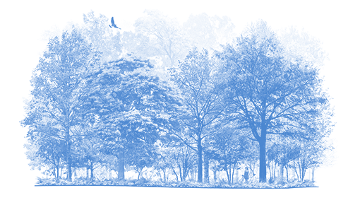

The Blue-winged Warbler sings a distinctive bee-buzz from brushy fields. It dangles from branches and leaves, foraging like a chickadee but shows off bright warbler plumage: a yellow belly, yellow-olive back, and white wingbars across blue-gray wings. A shrubland and old field specialist, it has benefited from landscape changes over the last 150 years as forest clearcuts and agricultural fields have grown up into scrubby fields. These changes have helped it expand northward, where it now hybridizes with and possibly threatens the much rarer Golden-winged Warbler.
Blue-winged Warblers eat caterpillars, crickets, grasshoppers, spiders, flies, ants, and beetles, which they often pick from clusters of dead leaves while dangling upside down in chickadee-like fashion.
Blue-winged Warblers breed in shrublands, scrubby areas, thickets, and forest edges. During migration they rest and forage in open woodlands, shrublands, thorn forests, gardens, and parks. On the wintering grounds they frequent evergreen and tropical deciduous forest and edge, scrubby areas, and hedgerows; often associating with mixed-species flocks.
Females select a spot on or near the ground to build a nest near the boundary between forest and scrub. Females frequently place the nest at the base of goldenrods, berry shrubs, or clumps of grasses or sedges.
Females build an open cup nest of grasses, bark shreds, and dead leaves, which she lines with finer plant material. Nest building takes 2–4 days on average.